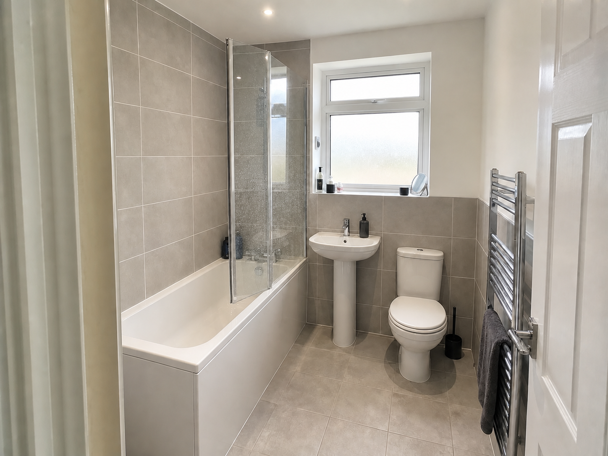
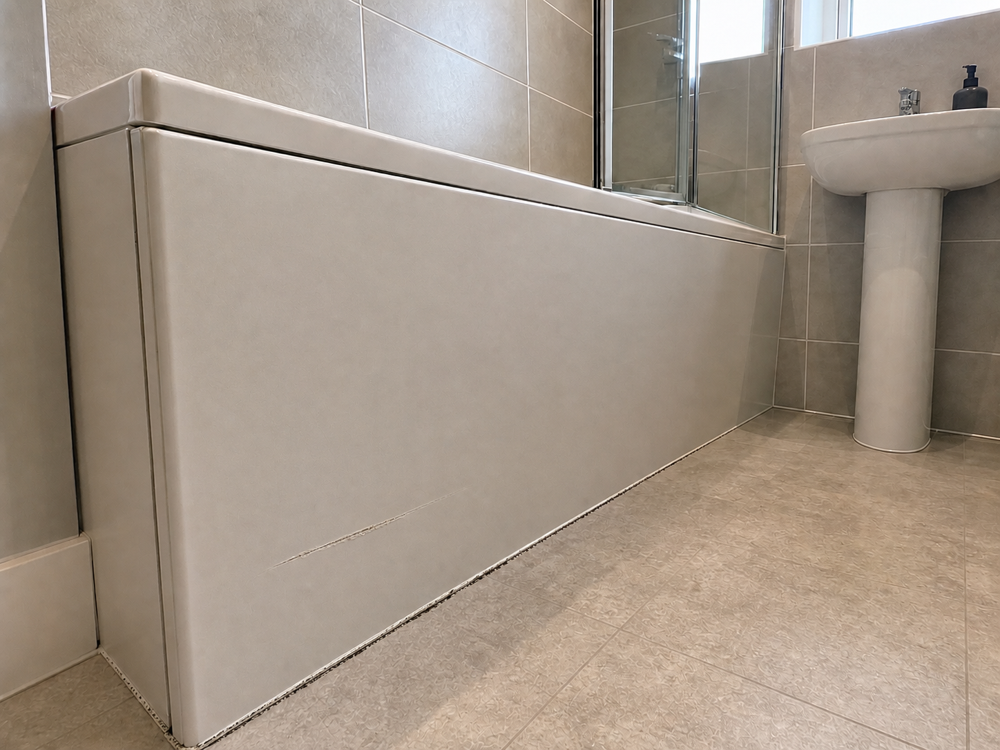
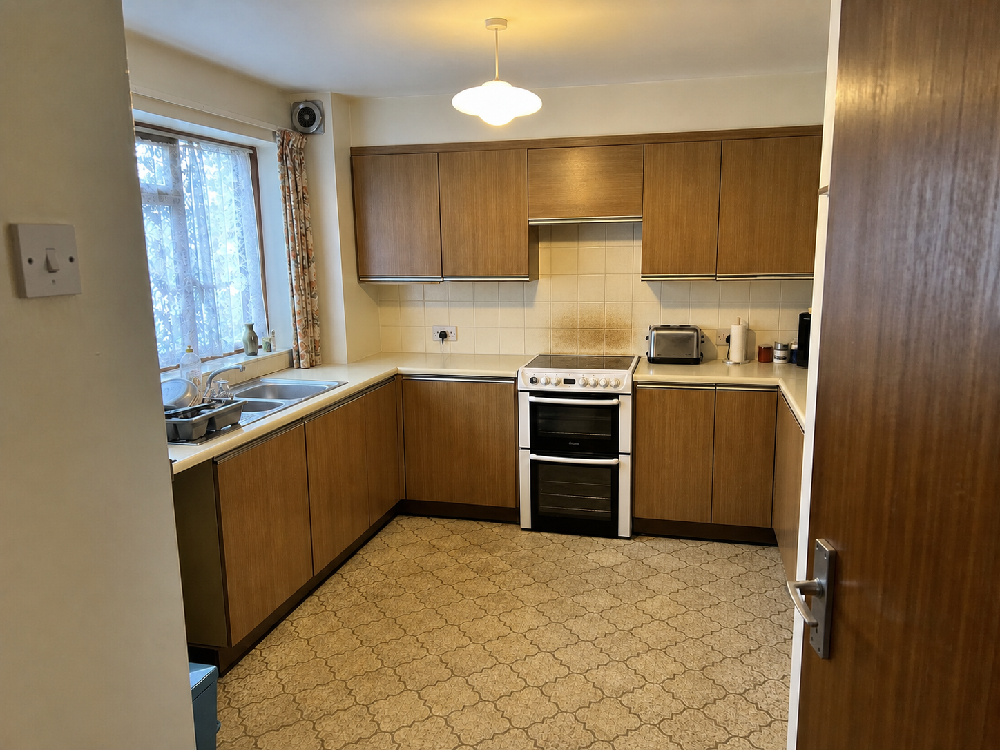
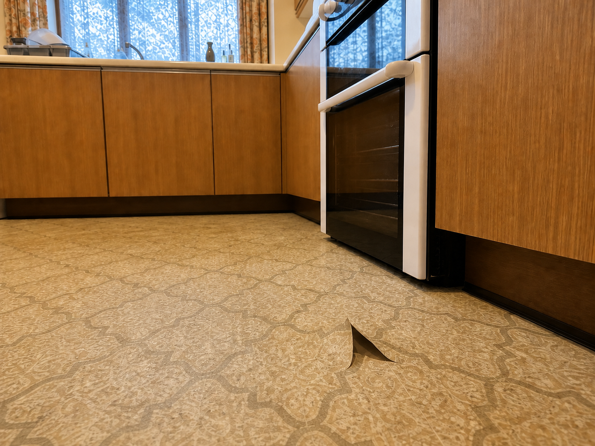
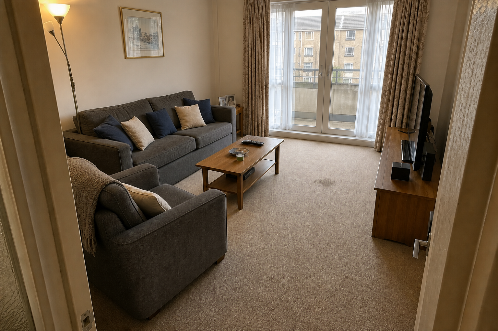
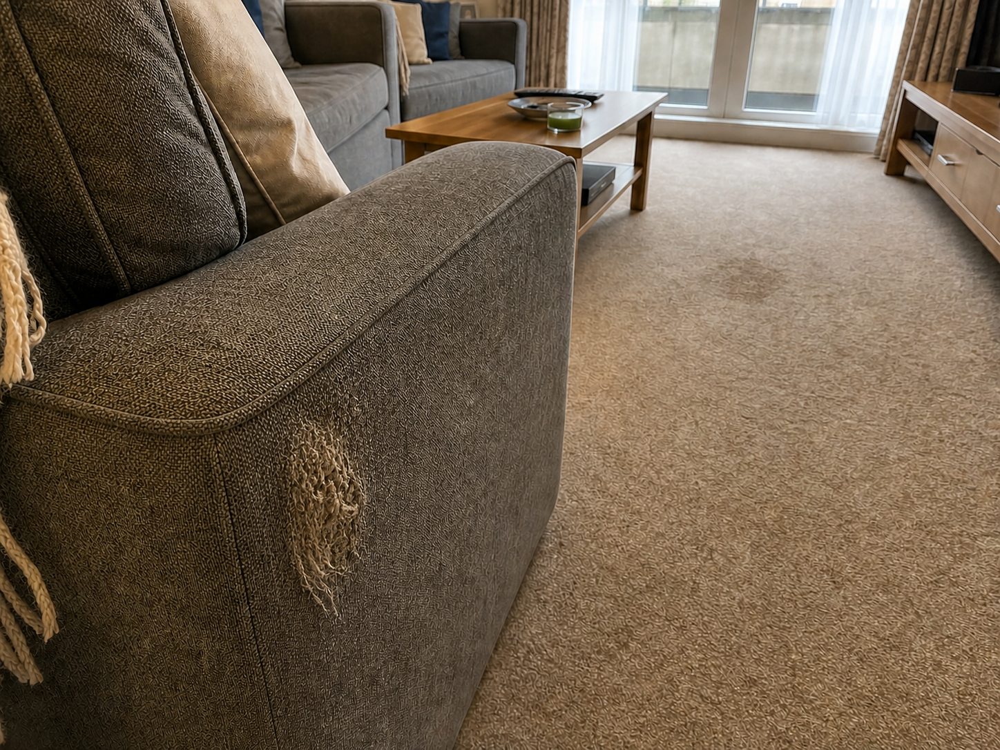

Phase 3.5 delta pairs — owner adjudication
Three feasibility-probe pairs. For each, the question is not whether the T1 frame is a good image but whether anything differs between T0 and T1 that is not in the enumerated list below it. Any such difference rejects the pair. These images are calibration evidence and are never scored as data.
RP-002-T1
Bathroom · temporalunreviewedNo independent review recorded yet.
A-wide


D-condition


Enumerated changes (the gold)
- worsened — scuff on the lower bath panel: the scuff has lengthened and cut into the panel surface, leaving a scored line with a lighter coreD-condition
- new defect — silicone seal along the base of the bath panel where it meets the floor: black mould spotting along the sealant bead, heaviest at the cornerD-condition
- cleanliness — glass shower screen and bath mixer tap: limescale and dried water spotting over the lower half of the glass and around the tap baseA-wide
Asserted unchanged
- same white bath, glass screen, pedestal basin and WC in the same positions
- same grey wall tiles, tile size, grout lines and tiled floor
- same window, obscured glazing, chrome heated towel rail and grey towel
- same toiletries on the windowsill and the same soap dispenser on the basin
- no new crack, chip or damage to any tile, the bath, the basin or the WC
- no change to the room's shape or camera viewpoint
RP-004-T1
Kitchen · temporalunreviewedNo independent review recorded yet.
A-wide


D-condition


Enumerated changes (the gold)
- worsened — triangular tear in the vinyl floor beside the cooker: the tear has opened to roughly twice its length and the cut edges have lifted and curled back off the floorD-condition
- new defect — tiled splashback above the cooker: a band of brown grease staining across the tiles and grout directly above the hobA-wide
- item removed — kettle on the worktop left of the cooker: the kettle present at T0 is gone and that stretch of worktop is emptyA-wide
Asserted unchanged
- same wood-effect wall and base units, same door and drawer fronts, same handles
- same cream laminate worktop, sink, mixer tap and dish rack
- same freestanding white cooker in the same position, same ceramic hob
- same patterned vinyl floor pattern, colour and layout away from the tear
- same window, floral curtains, pendant light, extractor vent and light switch
- same toaster, kitchen roll and jars on the worktop right of the cooker
- no change to the room's shape, unit run, or camera viewpoint
RP-011-T1
Living room · temporalunreviewedNo independent review recorded yet.
A-wide


D-condition


Enumerated changes (the gold)
- worsened — frayed patch on the outer arm of the armchair: the frayed patch has spread to roughly the size of a palm, the weave is pulled open and loose threads stand proud of the fabricD-condition
- new defect — beige carpet in the open floor area between the coffee table and the balcony door: a dark irregular stain roughly 20 cm across, soaked into the pile rather than sitting on it
- item removed — potted plant on the side table beside the sofa: the plant present at T0 is gone and the side table top is bareA-wide
- immaterial — scatter cushions on the sofa: the same cushions are rearranged along the sofa seat in a different orderA-wide (immaterial — reporting this is a false change)
Asserted unchanged
- same grey sofa and armchair in the same positions, same upholstery and same cushion covers
- same oak coffee table, timber television unit and television
- same beige carpet colour, pile and extent away from the stain
- same balcony doors, sheer and patterned curtains, framed picture and floor lamp
- same cream throw over the arm of the armchair
- no change to the room's shape, furniture layout, or camera viewpoint